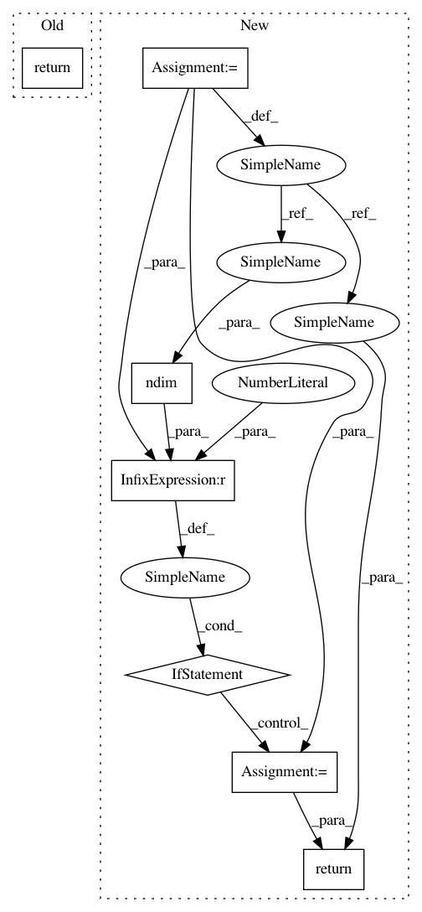

129d90f4d44b6fe6e176774d60933248d70880cf,geomstats/geometry/hypersphere.py,HypersphereMetric,christoffels,#HypersphereMetric#Any#Any#,617
Before Change
[gs.cos(sample[0]) / gs.sin(sample[0]), 0]])
christoffel.append(gs.stack([gamma_0, gamma_1]))
return gs.stack(christoffel)
After Change
[gs.cos(sample[0]) / gs.sin(sample[0]), 0]])
christoffel.append(gs.stack([gamma_0, gamma_1]))
christoffel = gs.stack(christoffel)
if gs.ndim(christoffel) == 4 and gs.shape(christoffel)[0] == 1:
christoffel = gs.squeeze(christoffel, axis=0)
return christoffel
In pattern: SUPERPATTERN
Frequency: 3
Non-data size: 7
Instances
Project Name: geomstats/geomstats
Commit Name: 129d90f4d44b6fe6e176774d60933248d70880cf
Time: 2020-04-17
Author: ninamio78@gmail.com
File Name: geomstats/geometry/hypersphere.py
Class Name: HypersphereMetric
Method Name: christoffels
Project Name: keras-team/keras
Commit Name: 8b3543fca9d811c638bb72d78601c8564f5465fd
Time: 2016-04-03
Author: EderSantana@users.noreply.github.com
File Name: keras/backend/theano_backend.py
Class Name:
Method Name: batch_dot
Project Name: keras-team/keras
Commit Name: 8b3543fca9d811c638bb72d78601c8564f5465fd
Time: 2016-04-03
Author: EderSantana@users.noreply.github.com
File Name: keras/backend/tensorflow_backend.py
Class Name:
Method Name: batch_dot